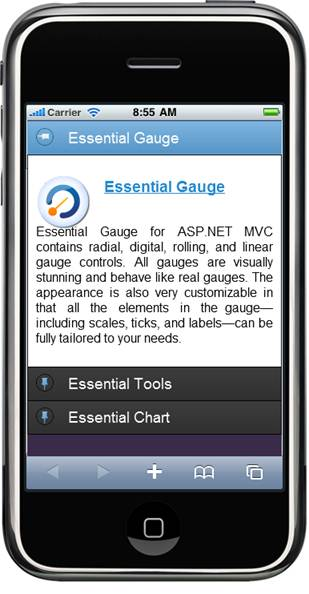
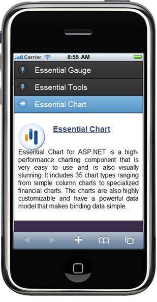

The load-on-demand feature helps you to load the Accordion content only on demand (on selecting).
Method:
|
Method |
Description |
Parameters |
Type |
Return Type |
Dependency |
|
LoadAjaxContent |
Allows you to specify the controller and action name from which the content is loaded using Ajax. |
Overloads: • (string value) • (string actionName, string controllerName) • (string actionName, string controllerName, object routeValues) • (string actionName, string controllerName, RouteValueDictionary routeValues)
|
Server side |
AccordionItemBuilder |
NA |
The following steps explain how you can load the Accordion Item content on demand:
1. In View, invoke the Accordion Helper with the Control ID as the first argument and set the LoadAjaxContent(), (which contains the action name and controller name) to load the AccordionItemContents on demand.
|
View[ASPX] <% { Html.MobSyncfusion().Accordion("AccordionControl1") .Items((item) => { item.Add().Text("Essential Gauge") .Content((Accordion) => {%><divclass="spcontent"> <divclass="sfimage spgauge"></div> <h3><ahref="http://www.syncfusion.com/products/user-interface-edition/aspnet-mvc/gauge"> Essential Gauge </a></h3> < p > Essential Gauge for ASP.NET MVC contains radial, digital, rolling, and linear gauge controls. All gauges are visually stunning and behave like real gauges. The appearance is also very customizable in that all the elements in the gauge—including scales, ticks, and labels—can be fully tailored to your needs.</p></div> <%}); item.Add().Text("Essential Tools").LoadAjaxContent("ToolsAjaxContent", "Accordion");
item.Add().Text("Essential Chart").LoadAjaxContent("ChartAjaxContent", "Accordion"); }) .Render(); }%>
PartialView[ToolsAjaxContent.ascx]
< div class ="spcontent"> <divclass="sfimage sptools"> </div> <h3> <ahref="http://www.syncfusion.com/products/user-interface-edition/aspnet-mvc/tools"> Essential Tools </a> </h3> <p> Essential Tools for ASP.NET MVC is a collection of lightweight, AJAX-enabled, professional user interface components built especially to suit the programming model of the ASP.NET MVC framework. It contains a comprehensive set of components including tree views, tabs, rich-text editors, accordions, sliders, masked-edit text boxes, numeric text boxes, AutoComplete text boxes, generic drop-downs, menus, and date pickers. </p> </ div >
PartialView[ChartAjaxContent.ascx]
< div class ="spcontent"> <divclass="sfimage spchart"> </div> <h3> <ahref="http://www.syncfusion.com/products/user-interface-edition/aspnet/chart">Essential Chart </a> </h3> <p> Essential Chart for ASP.NET is a high-performance charting component that is very easy to use and is also visually stunning. It includes 35 chart types ranging from simple column charts to specialized financial charts. The charts are also highly customizable and have a powerful data model that makes binding data simple. </p> </ div >
|
|
View[ASPX] @{ Html.MobSyncfusion().Accordion("AccordionControl1") .Items((item) => { item.Add().Text("Essential Gauge") .Content((Accordion) => @<divclass="spcontent"> <divclass="sfimage spgauge"></div> <h3><ahref="http://www.syncfusion.com/products/user-interface-edition/aspnet-mvc/gauge"> Essential Gauge </a></h3> < p > Essential Gauge for ASP.NET MVC contains radial, digital, rolling, and linear gauge controls. All gauges are visually stunning and behave like real gauges. The appearance is also very customizable in that all the elements in the gauge—including scales, ticks, and labels—can be fully tailored to your needs.</p></div> ); item.Add().Text("Essential Tools").LoadAjaxContent("ToolsAjaxContent", "Accordion");
item.Add().Text("Essential Chart").LoadAjaxContent("ChartAjaxContent", "Accordion"); })
.Render(); }
PartialView[ToolsAjaxContent.ascx]
< div class ="spcontent"> <divclass="sfimage sptools"> </div> <h3> <ahref="http://www.syncfusion.com/products/user-interface-edition/aspnet-mvc/tools"> Essential Tools </a> </h3> <p> Essential Tools for ASP.NET MVC is a collection of lightweight, AJAX-enabled, professional user interface components built especially to suit the programming model of the ASP.NET MVC framework. It contains a comprehensive set of components including tree views, tabs, rich-text editors, accordions, sliders, masked-edit text boxes, numeric text boxes, AutoComplete text boxes, generic drop-downs, menus, and date pickers. </p> </ div >
PartialView[ChartAjaxContent.ascx]
< div class ="spcontent"> <divclass="sfimage spchart"> </div> <h3> <ahref="http://www.syncfusion.com/products/user-interface-edition/aspnet/chart">Essential Chart </a> </h3> <p> Essential Chart for ASP.NET is a high-performance charting component that is very easy to use and is also visually stunning. It includes 35 chart types ranging from simple column charts to specialized financial charts. The charts are also highly customizable and have a powerful data model that makes binding data simple. </p> </ div >
|
2. Build and run the application in emulator. The output is displayed in the following screenshot:

Figure 194: Preloaded Content

Figure 195: Content Loaded on Demand